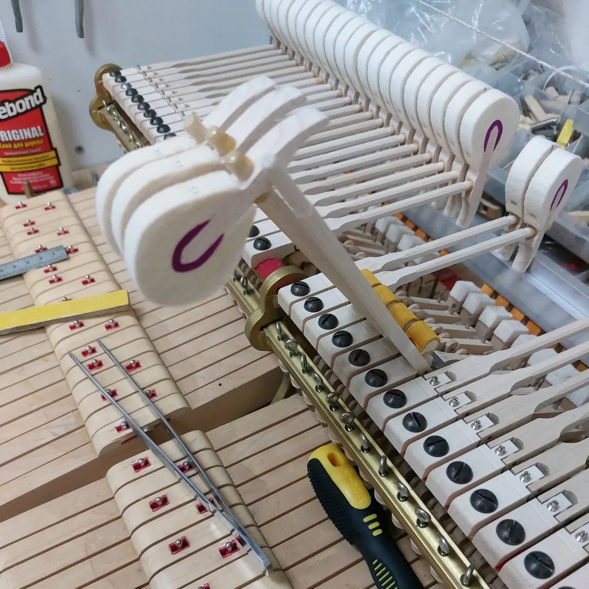
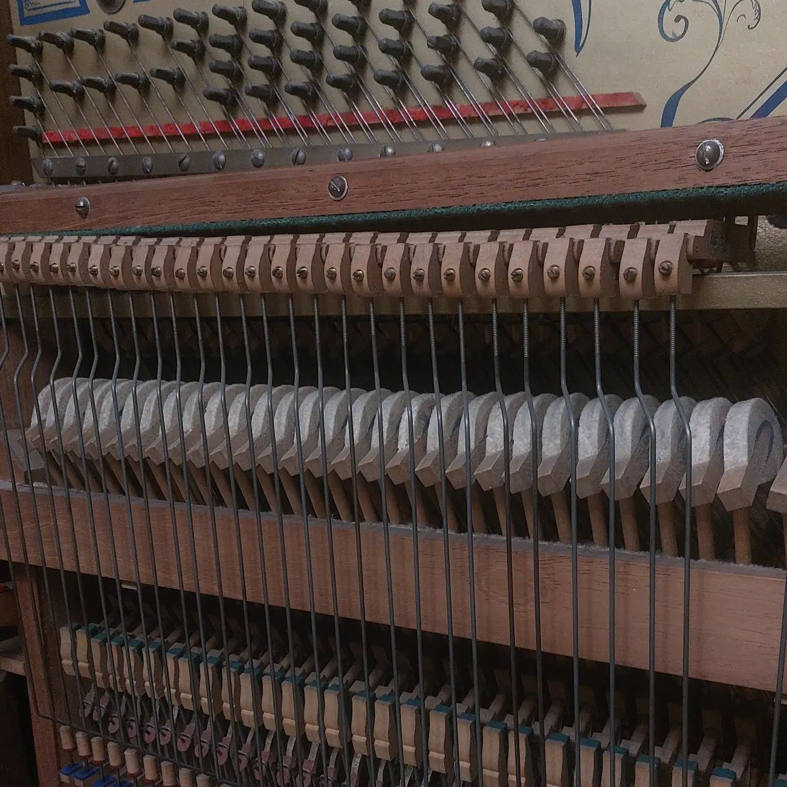

Настройка фортепиано включает в себя комплекс работ с музыкальным инструментом:
настройка, регулировка механики, чистка инструмента от пыли, устранение западаний
клавиш, скрипов, дребезжаний, неисправностей.
Неважно новое или старое фортепиано, «Беларусь» или «Петров», советское или
немецкое, они оба одинаково нуждаются в регулярном обслуживании.
На продолжительность строя и его качества влияют следующие факторы:
перепад температуры и влажности,
неисправность механизмов фортепиано механизмов;
качество изготовления пианино и роялей;
интенсивность занятий музыканта.
Настройка инструмента это что-то обыденное, требующие регулярности (1-2 раза в
год), как замена масла в автомобиле через определенный интервал времени.
Стоимость регулярного обслуживания фортепиано (1-2 раза в год) – 85 руб.
Стоимость запущенного состояния инструмента – ориентировочно 140-200 руб.
Точная стоимость определяется на месте при начале выполнения работ. (Цена -
качество)
Подписывайтесь на мой рабочий профиль в инстаграм!
Консультация
Бесплатная консультация
Позвоните по телефону и задайте все интересующие Вас вопросы о настройке,
ремонте, покупке пианино и роялей.
Выездная консультация
Перед покупкой б/у инструмента важно убедиться в исправности
клавишно-молоточкового механизма фортепиано. Нужно проверить, подлежит инструмент
настройке или ему нужен капитальный ремонт (дороже чем просто обслуживание) , хорошо
держит строй или будет быстро расстраиваться.
ик Состояние инструмента зависит от места и условий где стоял инструмент, как
много
его использовали, «кушала» ли его моль или другие вредители. Поэтому одинаковая
модель пианино или рояля, одного года выпуска, может быть как в отличном состоянии,
так и в ужасном, которая нуждается в утилизации, а не настройке и ремонте.
Стоимость выездной консультации – 35 руб.
При осмотре инструмента Вы получите точную информацию по стоимости настройки и
ремонта (при необходимости).
Подписывайтесь на мой рабочий профиль в инстаграм!

Ремонт
Детали и механизмы фортепиано со временем изнашиваются, может потребоваться их
частичная или полная замена. Возможен как мелкий ремонт, так и полная реновация
инструмента, восстановление разного уровня.
Целесообразность и стоимость ремонта можно узнать после осмотра и расчёта
калькуляции на ремонт.
Замена вирбелей, молотков, струн, сукна, друкшайб, флеек, полстера, белых и
черных
клавиш, пружинок, ремонт механики, деки, штега, внешнее восстановление и многое
другое.
brВ ремонте использую только качественные, проверенные материалы и
комплектующие.
Многое есть в наличии, чтобы быстро и в срок выполнить нужный ремонт.
Подписывайтесь на мой рабочий профиль в инстаграм!
О себе:
более 10 лет опыта работы;
настройщик Академии Музыки;
настройщик концертного зала «Верхний город»;
оказываю полный спектр услуг по ремонту и реставрации пианино и роялей;
большой опыт ремонта и реставрации как простых, так и премиальных пианино и
роялей;
профессиональное образование настройщика;
регулярно повышаю квалификацию самостоятельно и в различных семинарах;
высшее музыкальное образование (магистр, академия музыки).
Подписывайтесь на мой рабочий профиль в инстаграм!

Галерея
Подписывайтесь на мой рабочий профиль в инстаграм!
Купить пианино
Подписывайтесь на мой рабочий профиль в инстаграм!